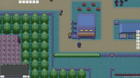

PokeMMO
Dieser Artikel wurde für die folgenden Ubuntu-Versionen getestet:
Ubuntu 16.04 Xenial Xerus
Zum Verständnis dieses Artikels sind folgende Seiten hilfreich:
 PokeMMO ist ein MMORPG, das in der Pokémon-Welt spielt. Pokémon sind eine Art Monster, auf die man als Pokémon- Trainer in der Spielwelt immer wieder trifft. Die Pokémon können mit Pokébällen eingefangen werden. Die gesammelten Pokémon werden dann von den Spielern trainiert und können gegeneinander kämpfen.
PokeMMO ist ein MMORPG, das in der Pokémon-Welt spielt. Pokémon sind eine Art Monster, auf die man als Pokémon- Trainer in der Spielwelt immer wieder trifft. Die Pokémon können mit Pokébällen eingefangen werden. Die gesammelten Pokémon werden dann von den Spielern trainiert und können gegeneinander kämpfen.
Das Programm kann kostenlos heruntergeladen und installiert werden. Zum Spielen muss aber ein Account erstellt werden und eine Internetverbindung ist erforderlich.
Neben der Linux-Version gibt es das Spiel auch für Windows und MacOS.

Installation¶
Es steht ein DEB- Installationspaket für Ubuntu bereit, das von der Entwicklerseite  heruntergeladen und installiert werden kann.[1]
heruntergeladen und installiert werden kann.[1]
Hinweis!
Fremdpakete können das System gefährden.
ROMs¶
Für das Spiel wird ein originales Abbild (sog. ROM) des Pokémon-Spiels von Nintendo benötigt, wobei man in Deutschland idealerweise das Originalspiel für den Gameboy noch zu Hause hat.
Damit das Spiel die deutsche Sprache optimal unterstützt, sollten die Abbilder in der deutschen Version vorhanden sein. Die ROMs werden nach der Installation des DEB- Paketes im Homeverzeichnis in den Ordner .pokemmo/roms/ gelegt.
| Pokémon- ROMs | |||
| Spiel | Plattform | Dateiendung | Funktion |
| Pokémon Feuerrote Edition | Game Boy Advance | .gba | wird zwingend benötigt |
| Pokémon Smaragd Edition | Game Boy Advance | .gba | schaltet optionale Spielinhalte frei |
| Pokémon Goldene Edition - HeartGold oder Pokémon Silberne Edition - SoulSilver | Nintendo DS | .nds | verbessert die Grafik optional |
Achtung!
Das Beziehen, Besitzen und Verwenden von Speicherabbildern kann je nach Standort und dortiger Rechtslage unter bestimmten Umständen bedenklich sein. Weitere Informationen findet man z.B. unter:
Bedienung¶
Nachdem man sich aus Ubuntu ausgeloggt und wieder eingeloggt hat, kann das Spiel über das Startersymbol PokeMMO gestartet werden[2].
Das Spiel kann auch über ein Terminal über die Eingabe von
pokemmo-launcher
gestartet werden.
Steuerung¶
| Steuerung | |
| Taste | Funktion |
| ↑ / ↓ / → / ← | Charakter/Auswahl nach oben/unten/rechts/links navigieren. |
| Z | Interagieren / Auswahl aktivieren / Text weiter scrollen. Entspricht Taste A auf Nintendo-Spieleplattformen. |
| X | Abbrechen / Text weiter scrollen. Entspricht Taste B auf Nintendo-Spieleplattformen. |
| F1 - F9 | Schnellwahltasten zum Benutzen von Gegenständen aus dem Rucksack. |
Es macht Sinn, bei Verwendung eines deutschen Tastaturlayouts die Standardfunktion der Taste Z in den Spieleinstellungen auf Y zu legen, damit die beiden wichtigsten Tasten nebeneinander liegen.
Infobox¶
| PokeMMO | |
| Genre: | MMORPG |
| Sprache: |   und weitere und weitere |
| Erscheinungsjahr: | vor 2002 |
| Systemvoraussetzungen: | Pentium 4 oder höher, mind. 128 MB RAM, Grafikkarte, OpenGL 1.4- kompatible Grafikkarte. |
| Unterstützte Betriebssysteme: | Linux(mit JDK 7 oder höher), OS X, Windows |
| Medien: | Download |
| Läuft mit: | nativ |
- Erstellt mit Inyoka
-
 2004 – 2017 ubuntuusers.de • Einige Rechte vorbehalten
2004 – 2017 ubuntuusers.de • Einige Rechte vorbehalten
Lizenz • Kontakt • Datenschutz • Impressum • Serverstatus -
Serverhousing gespendet von